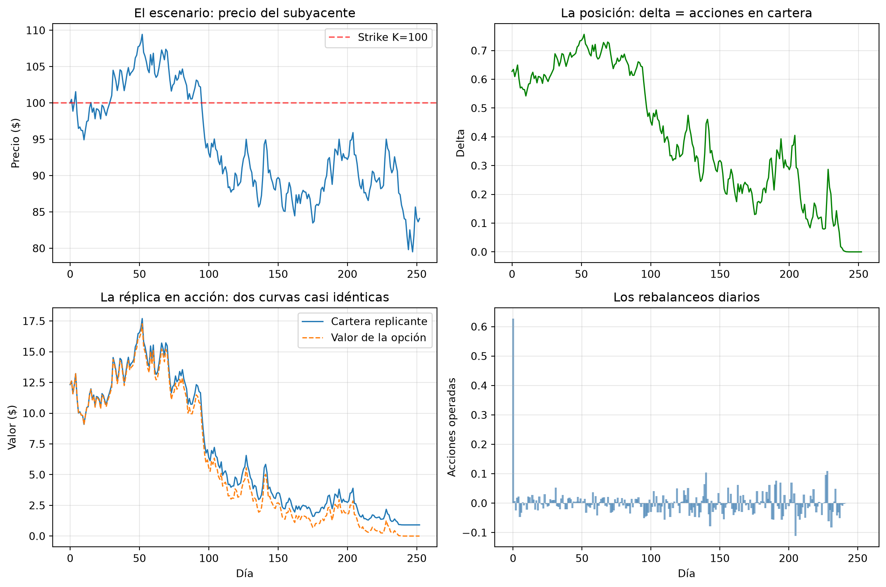
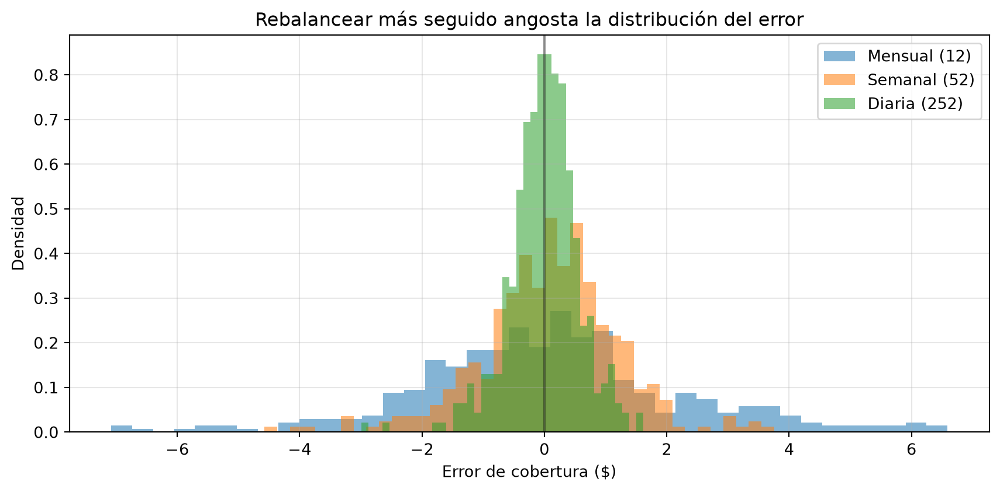
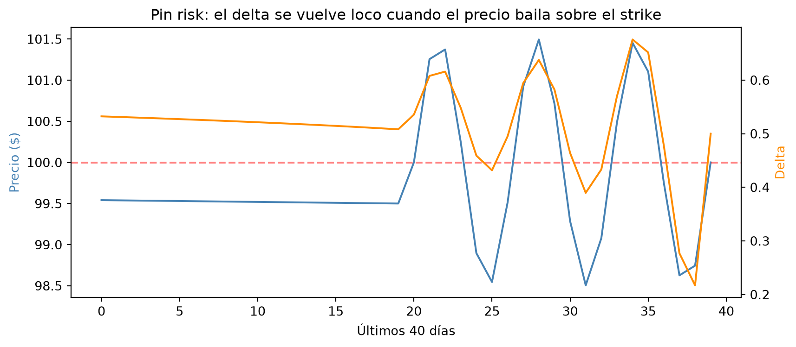

import numpy as np
import pandas as pd
import matplotlib.pyplot as plt
from scipy.stats import norm
rng = np.random.default_rng(42)
# El contrato que vendimos y el mercado
S0, K, T = 100, 100, 1.0 # call al dinero, 1 año
r, sigma = 0.05, 0.25
n_dias = 252
dt = T / n_dias
def bs_call(S, K, T, r, sigma):
"""Precio Black-Scholes de una call (maneja T=0 devolviendo el payoff)."""
if T <= 0:
return np.maximum(S - K, 0.0)
d1 = (np.log(S / K) + (r + 0.5 * sigma**2) * T) / (sigma * np.sqrt(T))
d2 = d1 - sigma * np.sqrt(T)
return S * norm.cdf(d1) - K * np.exp(-r * T) * norm.cdf(d2)
def bs_delta(S, K, T, r, sigma):
"""Delta de la call: N(d1). En el vencimiento, escalón 0/1."""
if T <= 0:
return float(S > K)
d1 = (np.log(S / K) + (r + 0.5 * sigma**2) * T) / (sigma * np.sqrt(T))
return norm.cdf(d1)19 Capítulo 19: Simulación de Cobertura Dinámica (Delta Hedging)
Replicar una opción operando el subyacente
Resumen
El capítulo más integrador del libro: simulamos el día a día de un trader que vendió una call y se cubre recalculando su delta y rebalanceando acciones cada jornada. En el camino descubrimos la idea que fundamenta Black-Scholes —una opción se puede replicar—, medimos el error de cobertura, entendemos por qué el gamma lo gobierna, y estudiamos cómo la frecuencia de rebalanceo y los costos cambian el resultado.
20 Introducción
Imaginate que trabajás en la mesa de derivados de un banco y un cliente te compra una call. Cobraste la prima, pero ahora tenés un problema: si la acción sube fuerte, el payoff que vas a tener que pagar crece sin límite. ¿Cómo dormís tranquilo?
La respuesta es la idea más profunda de todo el pricing de derivados: cubrirse replicando. Si la call tiene delta 0.57, su valor se mueve como 0.57 acciones; entonces comprás 0.57 acciones y tu posición combinada (call vendida + acciones) queda momentáneamente insensible al precio. El problema es que el delta cambia cuando el precio se mueve (eso es el gamma) y cuando pasa el tiempo — así que la cobertura hay que rebalancearla continuamente. De ahí el nombre: cobertura dinámica.
Y acá la conexión conceptual con el capítulo anterior: Black y Scholes derivaron su fórmula mostrando que esta estrategia de réplica, llevada al límite continuo, reproduce el payoff de la opción exactamente, sin importar hacia dónde vaya el mercado. El precio de la opción es el costo de replicarla. La simulación de este capítulo es, en el fondo, la demostración experimental de Black-Scholes.
Vamos a construirla completa, integrando todo el libro: GBM (Cap. 13), Black-Scholes y griegas (Cap. 18), y pandas para el registro de operaciones (Cap. 6).
21 La mecánica de un día de trading
La rutina diaria del trader cubierto, que vamos a codificar tal cual:
- Amanece: el precio se movió. Recalculás el delta de la opción con el precio nuevo y el tiempo restante.
- Rebalanceás: si el delta subió de 0.55 a 0.60, comprás 0.05 acciones más; si bajó, vendés. El cash de esas operaciones entra o sale de tu cuenta.
- El cash devenga interés (o pagás por el financiamiento si estás en descubierto).
- Al vencimiento, pagás el payoff al cliente y cerrás la posición en acciones.
Si la réplica es buena, la prima cobrada al inicio + los resultados del trading deberían cubrir casi exactamente el payoff. La diferencia es el error de cobertura.
# Un escenario de mercado: el precio evoluciona como GBM
Z = rng.standard_normal(n_dias)
S = np.empty(n_dias + 1)
S[0] = S0
for t in range(1, n_dias + 1):
S[t] = S[t-1] * np.exp((r - 0.5 * sigma**2) * dt + sigma * np.sqrt(dt) * Z[t-1])
print(f"Precio final: ${S[-1]:.2f} → la call termina "
f"{'DENTRO del dinero (habrá que pagar)' if S[-1] > K else 'fuera del dinero (expira sin valor)'}")Precio final: $84.10 → la call termina fuera del dinero (expira sin valor)prima = bs_call(S0, K, T, r, sigma)
registros = []
cash = prima # arrancamos con la prima cobrada
acciones = 0.0 # y sin acciones
for t in range(n_dias + 1):
tiempo_restante = T - t * dt
delta = bs_delta(S[t], K, tiempo_restante, r, sigma)
# Rebalanceo: llevamos la posición en acciones al delta de hoy
trade = delta - acciones
cash -= trade * S[t] # comprar acciones consume cash (vender lo repone)
acciones = delta
# El cash devenga la tasa libre de riesgo hasta mañana
if t < n_dias:
cash *= np.exp(r * dt)
# Mark-to-market: ¿cómo venimos vs. la opción que debemos?
valor_opcion = bs_call(S[t], K, tiempo_restante, r, sigma)
valor_cartera = acciones * S[t] + cash
registros.append({
"dia": t, "precio": S[t], "delta": delta, "trade": trade,
"cash": cash, "valor_opcion": valor_opcion,
"valor_cartera": valor_cartera,
"pnl": valor_cartera - valor_opcion,
})
df = pd.DataFrame(registros)
payoff_final = max(S[-1] - K, 0)
error_hedge = df.iloc[-1]["valor_cartera"] - payoff_final
print(f"Prima cobrada al inicio: ${prima:8.2f}")
print(f"Payoff a pagar al cliente:${payoff_final:8.2f}")
print(f"Valor final de la réplica:${df.iloc[-1]['valor_cartera']:8.2f}")
print(f"Error de cobertura: ${error_hedge:8.2f} "
f"({error_hedge / prima:+.1%} de la prima)")Prima cobrada al inicio: $ 12.34
Payoff a pagar al cliente:$ 0.00
Valor final de la réplica:$ 0.91
Error de cobertura: $ 0.91 (+7.4% de la prima)Leé el resultado con perspectiva: el precio se movió durante un año entero —quizás terminó 20% arriba o abajo— y sin embargo el trader cubierto termina con un error de centavos por cada 100 de prima. No adivinó el mercado ni le hizo falta: la réplica transformó una posición especulativa en un negocio de fabricación. El banco “fabrica” la opción comprando y vendiendo el subyacente, y su ganancia es el margen sobre el costo de fabricación — no una apuesta direccional.
fig, axes = plt.subplots(2, 2, figsize=(12, 8))
ax = axes[0, 0]
ax.plot(df["dia"], df["precio"], linewidth=1.2)
ax.axhline(K, color="red", linestyle="--", alpha=0.6, label=f"Strike K={K}")
ax.set_title("El escenario: precio del subyacente")
ax.set_ylabel("Precio ($)")
ax.legend()
ax.grid(True, alpha=0.3)
ax = axes[0, 1]
ax.plot(df["dia"], df["delta"], color="green", linewidth=1.2)
ax.set_title("La posición: delta = acciones en cartera")
ax.set_ylabel("Delta")
ax.grid(True, alpha=0.3)
ax = axes[1, 0]
ax.plot(df["dia"], df["valor_cartera"], label="Cartera replicante", linewidth=1.2)
ax.plot(df["dia"], df["valor_opcion"], "--", label="Valor de la opción", linewidth=1.2)
ax.set_title("La réplica en acción: dos curvas casi idénticas")
ax.set_xlabel("Día")
ax.set_ylabel("Valor ($)")
ax.legend()
ax.grid(True, alpha=0.3)
ax = axes[1, 1]
ax.bar(df["dia"], df["trade"], color="steelblue", alpha=0.7, width=1.5)
ax.set_title("Los rebalanceos diarios")
ax.set_xlabel("Día")
ax.set_ylabel("Acciones operadas")
ax.grid(True, alpha=0.3)
plt.tight_layout()
plt.show()
Fijate dos cosas en los gráficos. Primero, el panel inferior izquierdo: la cartera replicante persigue al valor de la opción durante todo el año — esa es la réplica funcionando. Segundo, el panel del delta comparado con el del precio: cuando el precio cruza el strike, el delta se mueve rápido y los rebalanceos se agrandan. Ahí gobierna el gamma.
TipComprar caro y vender barato, por diseño
Observá el patrón de los trades: cuando el precio sube, el delta sube y el trader compra; cuando baja, vende. El cubridor de una opción vendida compra en las subas y vende en las bajas — sistemáticamente pierde en cada ida y vuelta. Ese costo acumulado no es un defecto: es exactamente el valor temporal de la opción que cobró como prima. Si la volatilidad realizada termina siendo la que cotizó (\(\sigma\)), prima y costo de cobertura se cancelan. Si el mercado se mueve más que lo cotizado, el cubridor pierde; si se mueve menos, gana. Vender opciones cubiertas es, en el fondo, vender volatilidad.
22 El error de cobertura: de dónde viene y cómo se achica
En el mundo ideal de Black-Scholes el rebalanceo es continuo y el error es cero. Nosotros rebalanceamos una vez por día, y entre rebalanceo y rebalanceo el delta queda desactualizado. ¿Cuánto cuesta esa discretización? La respuesta la da el gamma: entre dos rebalanceos, el error de la aproximación lineal es \(\tfrac{1}{2}\Gamma (\Delta S)^2\) — cuadrático en el movimiento del precio.
La teoría predice algo verificable: el error de cobertura tiene media ~0 y su desvío cae como \(1/\sqrt{n}\) con la frecuencia de rebalanceo. Comprobémoslo con un experimento masivo:
def error_hedging(n_rebalanceos, n_sims, rng):
"""Distribución del error de cobertura para una frecuencia dada."""
dt_h = T / n_rebalanceos
errores = np.empty(n_sims)
for i in range(n_sims):
Z = rng.standard_normal(n_rebalanceos)
S_t, cash, acc = S0, prima, 0.0
for t in range(n_rebalanceos):
delta = bs_delta(S_t, K, T - t * dt_h, r, sigma)
cash -= (delta - acc) * S_t
acc = delta
cash *= np.exp(r * dt_h)
S_t *= np.exp((r - 0.5 * sigma**2) * dt_h + sigma * np.sqrt(dt_h) * Z[t])
errores[i] = acc * S_t + cash - max(S_t - K, 0)
return errores
frecuencias = {"Mensual (12)": 12, "Semanal (52)": 52, "Diaria (252)": 252}
resultados = {nombre: error_hedging(n, 400, np.random.default_rng(7))
for nombre, n in frecuencias.items()}
print(f"{'Rebalanceo':<16}{'Error medio':>12}{'Desvío':>10}")
for nombre, err in resultados.items():
print(f"{nombre:<16}{err.mean():>12.3f}{err.std():>10.3f}")
fig, ax = plt.subplots(figsize=(9, 4.5))
for nombre, err in resultados.items():
ax.hist(err, bins=40, alpha=0.55, label=nombre, density=True)
ax.axvline(0, color="black", alpha=0.4)
ax.set_xlabel("Error de cobertura ($)")
ax.set_ylabel("Densidad")
ax.set_title("Rebalancear más seguido angosta la distribución del error")
ax.legend()
ax.grid(True, alpha=0.3)
plt.tight_layout()
plt.show()Rebalanceo Error medio Desvío
Mensual (12) 0.085 2.181
Semanal (52) 0.079 1.130
Diaria (252) -0.009 0.567
La media es ~0 en todos los casos (la cobertura no está sesgada) y el desvío se achica con la raíz de la frecuencia: de mensual a diario hay un factor \(\sqrt{252/12} \approx 4.6\). En el límite continuo, el error desaparece — esa es la demostración experimental del argumento de Black-Scholes.
22.1 El freno del mundo real: costos de transacción
¿Entonces por qué no rebalancear cada minuto? Porque cada operación cuesta (comisiones, spread). Más frecuencia = menos error de gamma pero más costos: hay un punto óptimo intermedio, y encontrarlo es un problema clásico de la microestructura de la cobertura.
def error_con_costos(n_rebalanceos, costo_bps, n_sims, rng):
dt_h = T / n_rebalanceos
errores = np.empty(n_sims)
for i in range(n_sims):
Z = rng.standard_normal(n_rebalanceos)
S_t, cash, acc = S0, prima, 0.0
for t in range(n_rebalanceos):
delta = bs_delta(S_t, K, T - t * dt_h, r, sigma)
trade = delta - acc
cash -= trade * S_t + abs(trade) * S_t * costo_bps / 1e4 # costo proporcional
acc = delta
cash *= np.exp(r * dt_h)
S_t *= np.exp((r - 0.5 * sigma**2) * dt_h + sigma * np.sqrt(dt_h) * Z[t])
errores[i] = acc * S_t + cash - max(S_t - K, 0)
return errores
print(f"Con costos de 5 puntos básicos por operación:")
print(f"{'Rebalanceo':<16}{'Error medio':>12}{'Desvío':>10}")
for nombre, n in frecuencias.items():
err = error_con_costos(n, costo_bps=5, n_sims=400, rng=np.random.default_rng(7))
print(f"{nombre:<16}{err.mean():>12.3f}{err.std():>10.3f}")Con costos de 5 puntos básicos por operación:
Rebalanceo Error medio Desvío
Mensual (12) 0.002 2.186
Semanal (52) -0.064 1.132
Diaria (252) -0.289 0.588Ahora el error medio es negativo y empeora con la frecuencia: los costos son un peaje que se paga en cada rebalanceo. El trader real equilibra: rebalancea por bandas (“solo si el delta se desvió más de X”), usa el gamma para decidir cuándo vale la pena, y cotiza la opción con un margen que cubra este peaje.
23 Cuando el gamma muerde: cerca del strike, cerca del vencimiento
El talón de Aquiles de la cobertura delta es la zona donde el gamma explota: strike cercano y poco tiempo restante (el pico puntiagudo del capítulo anterior). Ahí el delta salta de casi-0 a casi-1 con movimientos chicos del precio, y ninguna frecuencia razonable de rebalanceo alcanza.
# Un escenario malicioso: el precio termina oscilando alrededor del strike
dias_final = 20
S_pin = np.concatenate([
np.linspace(100, 99.5, n_dias + 1 - dias_final), # tranquilo hasta el final
100 + 1.5 * np.sin(np.linspace(0, 6 * np.pi, dias_final)) # y baila sobre el strike
])
deltas_pin = [bs_delta(S_pin[t], K, max(T - t * dt, 1e-9), r, sigma)
for t in range(n_dias + 1)]
fig, ax = plt.subplots(figsize=(9, 4))
ax2 = ax.twinx()
ax.plot(S_pin[-40:], color="steelblue", label="Precio")
ax.axhline(K, color="red", linestyle="--", alpha=0.5)
ax2.plot(deltas_pin[-40:], color="darkorange", label="Delta")
ax.set_xlabel("Últimos 40 días")
ax.set_ylabel("Precio ($)", color="steelblue")
ax2.set_ylabel("Delta", color="darkorange")
ax.set_title("Pin risk: el delta se vuelve loco cuando el precio baila sobre el strike")
plt.tight_layout()
plt.show()
En esos últimos días el trader compra arriba y vende abajo una y otra vez, sangrando en cada vuelta — el famoso pin risk. La respuesta profesional es cubrir también la curvatura: el delta-gamma hedging agrega otra opción a la cartera para neutralizar el gamma (las acciones solas no pueden: su gamma es cero). Queda como ejercicio, y es la puerta de entrada a la gestión de books de opciones reales.
24 Errores comunes
AdvertenciaTrampas frecuentes
- Olvidar el interés del cash: en horizontes largos, el carry del cash es parte material del resultado; omitirlo sesga el error de cobertura.
- Rebalancear con el delta de ayer: el delta debe calcularse con el precio y el tiempo de hoy, antes de operar. Desfasar un día introduce un error sistemático.
- Confundir el P&L del hedge con ganancia de trading: el objetivo del cubridor es error ~0; un P&L grande (a favor o en contra) significa que la cobertura falló o que la vol realizada difirió de la cotizada.
- Ignorar el caso T→0 en las funciones:
bs_deltaconT=0divide por cero si no se maneja aparte; en el vencimiento el delta es un escalón. - Simular con drift μ para valuar: la réplica funciona con cualquier drift (esa es la magia), pero el mark-to-market usa el precio Black-Scholes, que vive en el mundo neutral al riesgo.
25 Ejercicios Propuestos
ImportanteEjercicios
- Vol realizada vs. cotizada: simulá el mercado con \(\sigma_{real} = 30\%\) pero cubrí usando \(\sigma = 25\%\) en las fórmulas. ¿El error medio sigue siendo cero? ¿Quién gana, el comprador o el vendedor de la opción?
- Bandas de rebalanceo: implementá la regla “rebalancear solo si \(|\delta_{hoy} - \text{acciones}| > 0.05\)” y comparala con el rebalanceo diario en error y en número de operaciones (con costos de 5 bps).
- Delta-gamma hedging: agregá una segunda call (strike 110) a la cartera para anular el gamma además del delta, y verificá que el error en el escenario de pin risk se reduce.
- Put vendida: repetí la simulación completa para una put. ¿Cambia el signo de los rebalanceos? ¿Y la exposición al gamma?
- Salto sorpresa: introducí un salto de −10% en un día aleatorio del escenario (Capítulo 14) y medí el error de cobertura. ¿Por qué el delta hedging no puede protegerte de un salto?
Podés resolver estos ejercicios acá mismo: la celda ejecuta Python en tu navegador, sin instalar nada (la primera ejecución tarda unos segundos mientras carga el entorno; los paquetes que importes se instalan solos).
26 Referencias
Derman, Emanuel, y Michael Miller. 2016. The Volatility Smile. Wiley.
Hull, John. 2018. Options, Futures, and Other Derivatives. 10.ª ed. Pearson.
Taleb, Nassim Nicholas. 1997. Dynamic Hedging: Managing Vanilla and Exotic Options. Wiley.
19 Capítulo 19: Simulación de Cobertura Dinámica (Delta Hedging) – Finanzas Computacionales 19 Capítulo 19: Simulación de Cobertura Dinámica (Delta Hedging) – Finanzas Computacionales 19 Capítulo 19: Simulación de Cobertura Dinámica (Delta Hedging) – Finanzas Computacionales Finanzas Computacionales El capítulo más integrador del libro: simulamos el día a día de un trader que vendió una call y se cubre recalculando su delta y rebalanceando acciones cada jornada. En el camino descubrimos la idea que fundamenta Black-Scholes —una opción se puede replicar—, medimos el error de cobertura, entendemos por qué el gamma lo gobierna, y estudiamos cómo la frecuencia de rebalanceo y los costos cambian el resultado. El capítulo más integrador del libro: simulamos el día a día de un trader que vendió una call y se cubre recalculando su delta y rebalanceando acciones cada jornada. En el camino descubrimos la idea que fundamenta Black-Scholes —una opción se puede replicar—, medimos el error de cobertura, entendemos por qué el gamma lo gobierna, y estudiamos cómo la frecuencia de rebalanceo y los costos cambian el resultado.